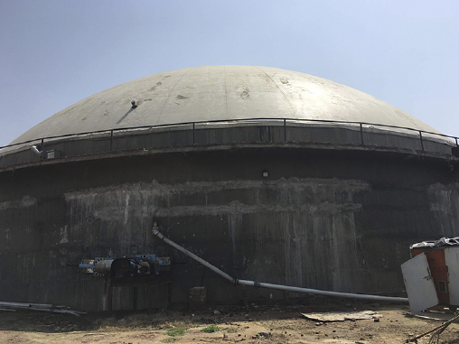
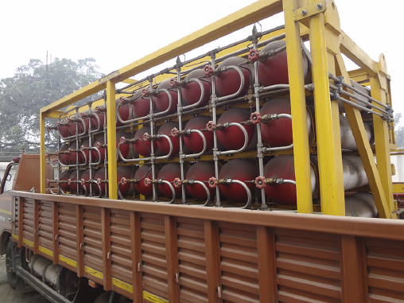
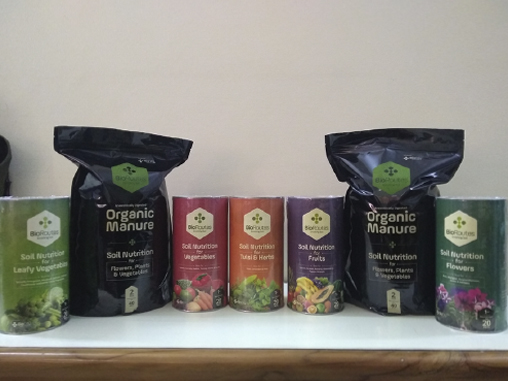
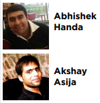

Source Facility and BioCity
Meeting the Methane Challenge
Source Facility and BioCity contribute to methane mitigation by capturing and
using biogas from
cow dung and agricultural residue. Additionally, because their projects offer an alternative
use
for crop residues that are typically burned in fields, they are helping to reduce black carbon
emissions and protect local air quality.
Source Facility and BioCity are complementary companies established to address the operational challenges of biogas
systems and meet the energy and fertilizer
demands in India. Source Facility is a third-party operator of biodigester systems and manages the
day to day operations of large-scale
biodigesters. The company develops key relationships with local farmers and waste producers to
source feedstocks and manages the digester
operations and production of high-quality biogas. BioCity markets and distributes the biogas and
biofertilizer products to end users in rural and
urban communities across India. It is an innovative business model that improves projects’
economic, environmental and social output through
the entrepreneurs’ involvement in all stages of biogas and biofertilizer production and use.
Source Facility
works with owners of existing or planned biodigesters by:
- Aggregating and supplying feedstock, including cow dung,
sugar cane milling residue (press mud), and other agricultural
residues
- Analyzing feedstock chemistry to optimize biogas production
- Providing an on-site technician to ensure proper operations
- Building relationships with local farmers and waste production
facilities to source feedstocks and creating new jobs and income
for rural communities
|  |
 |
 |
| Biodigester |
Cylinders for biogas |
Fertilizer |
Source Facility currently operates three biodigester facilities in India,
with a combined design capacity of more than 110 tonnes/day.
These facilities process manure from up to 2,000 cows from farms
within 20 km of each project and can produce up to 9,000 m3 of
biogas per day. The facilities can also co-digest press mud from
sugar cane mills and other agricultural residues.
BioCity
Markets and distributes biogas and biofertilizer produced by the
facilities operated by Source Facility. BioCity supports local
communities by:
- Providing 2,500 kg per day of compressed biogas to local
restaurants for cooking, manufacturers for production fuel, and
others for vehicle fuel
- Providing logistical support to
transport the products to end users
- Providing technical support to end
users to ensure safe use of the gas
- Meeting the fertilizer needs of
rural and urban India
About the Project Developers
Source Facility and BioCity were founded by Abhishek Handa and Akshay Asija, entrepreneurial
project developers based in India. Handa and Asija intend to scale their business by
identifying opportunities to improve efficiencies and operations at other low-performing
biodigester facilities in addition to continuing to invest in their own facilities. They noted
that access to financing is key to future growth of biodigester development in India.
Download The PDF